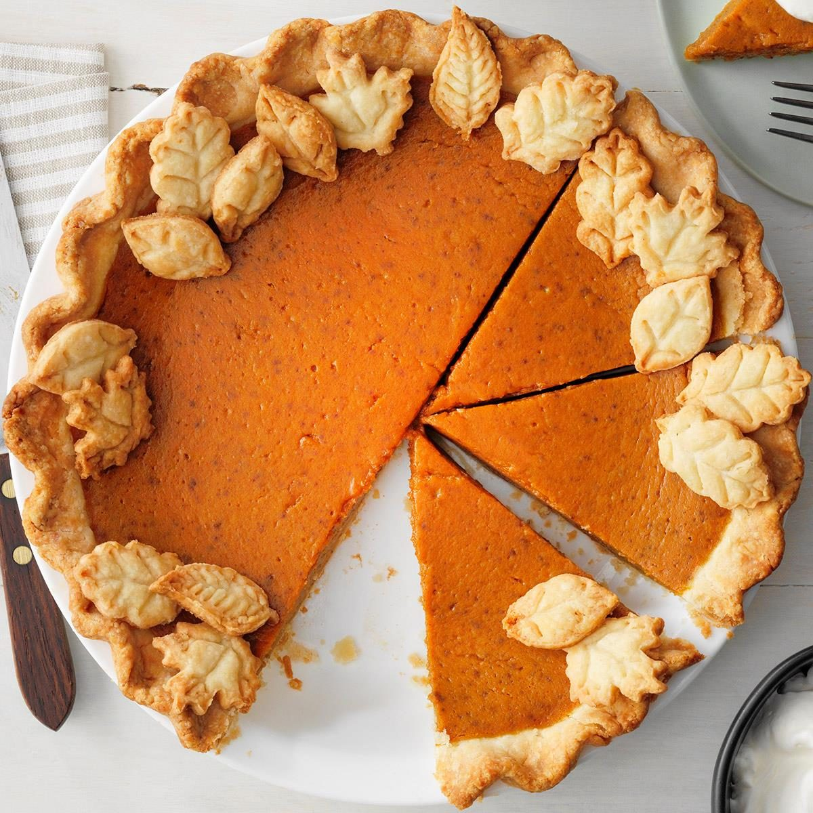

Pumpkin Pie

Pumpkin Pie Recipe Description
This pumpkin pie recipe is perfect for the holiday season!
With ingredients such as pumpkin, espresso cream cheese, and pumpkin pie
spice, this will go perfect for any festive occasation!
Pumpkin Pie Ingredients
- Unbaked Pie Crust
- Pumpkin Puree
- Eggs
- Pumpkin Spice
- Salt
- Cream Cheese
- Sugar
- Egg Yolk
- Vanilla Extract
- Espresso Powder
Steps to Make:
- Step 1: Preheat oven to 425 degrees.
- Step 2: Mix puree, milk, eggs, salt and put into unbaked crust
This step makes the pumpkin flavor and crust.
- Step 3: Mix cream cheese, sugar, powder, yolk, vanilla and salt and whisk.
This step makes the cream cheese mix.
- Step 4: Mix cream cheese mix along with pumpkin mix into crust.
- Step 5: Bake Pumpkin Pie into an oven.